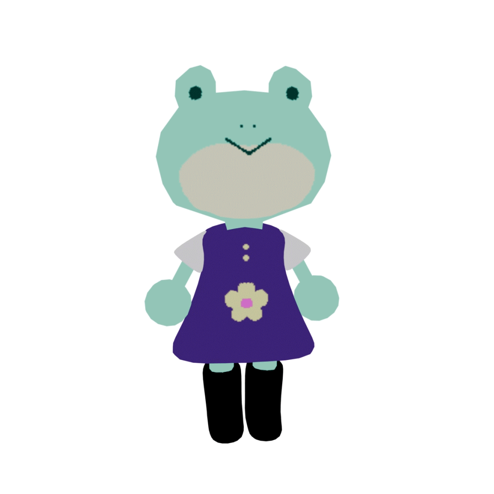

Hello World!
디자이너 배서연의 스페이스

유일한 루틴
수집
이런것들을 해요
instagram
e-mail
content: "귀여움"; 과 logic: "탄탄함";을 mixin하여 세상을 더 흥미롭게 만드는 디자이너입니다.
디지털 화면 위에서도, 현실의 도화지 위에서도 손으로 무언가를 사부작사부작 만들어낼 때 가장 행복합니다.
서툴지만 귀엽고 마음이 몽글몽글해지는 디자인을 좋아하시나요?
제 작업실에서 편안한 시간 보내고 가세요!
현재 사이트는 열심히 빌드 중(Build)이니, 자주 놀러 와서 구경해 주세요!